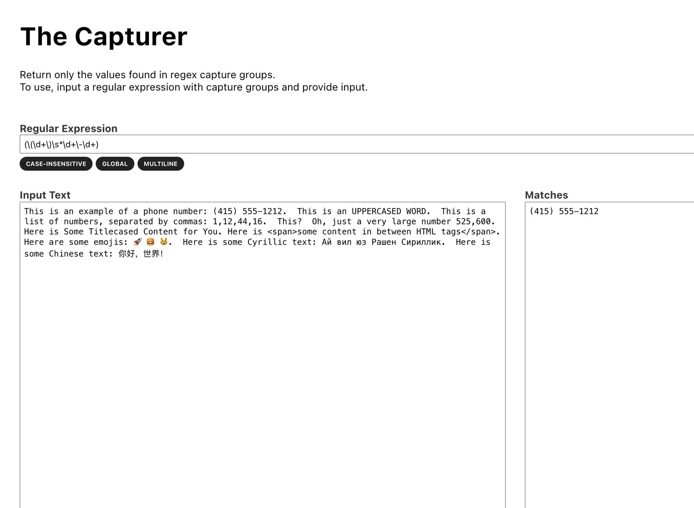

Capturer

Capturer is a regular expression tool that uses capture groups to isolate content.
It's a niche use-case, but it's useful for extracting data from strings.
Its built in React & uses web workers to keep the UI quick.
The work, projects & media of Jeffery Bennett

Capturer is a regular expression tool that uses capture groups to isolate content.
It's a niche use-case, but it's useful for extracting data from strings.
Its built in React & uses web workers to keep the UI quick.